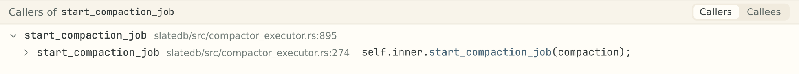

Perch
PerchConversation and Code
At the top of an item, choose Conversation to read its description, timeline, and threads, or Code to open its files. In Code, file tabs sit above the editor and the file tree opens on the right.
On an issue, Code shows a read-only checkout of the repository’s default branch. Perch creates it when you first open an issue in that repository. The file tree shows the branch, commit, and last fetch time. Use its refresh button to fetch now. Opening an issue also fetches, at most once per minute per repository.
Issues in the same repository share this checkout. A fetch updates all their open files. Click a file mentioned in the issue or use Cmd-P to find it. To edit the code, choose Start Work for a separate worktree.
New items open in Conversation. Until you quit, each item remembers its view and open tabs. Closing the last file leaves you in Code. Switch back to Conversation when you want to reply.
| Action | Key |
|---|---|
| Conversation, Code | Cmd-Shift-1, Cmd-Shift-2 |
| Next, previous file tab | Cmd-}, Cmd-{ |
| Close the file | Cmd-W |
| The file tree | Cmd-/ or Cmd-Shift-E |
| Agents | Cmd-Shift-A |
See Keyboard shortcuts for the full list and how to change a binding.
The file tree
In Code, the file tree opens beside the editor on the right. In a narrow window it slides over the editor. Opening and closing it keeps your file, scroll position, and draft comment in place.
Open or close the tree with the folder button above the editor, Cmd-/, or Cmd-Shift-E. From Conversation, the shortcut also switches to Code. The tree opens on your first visit to an item’s Code view. Perch remembers its width and whether you left it open between launches.
The tree initially shows changed files. Turn off the changed-files filter to browse the whole checkout. Above the tree, choose which changes to show and see how many files you’ve marked viewed. Perch remembers your last scope when the item has changes in it and otherwise shows Branch. Opening a single commit or an agent run from its card leaves that preference alone.
Follow a definition or click a file link and the tree expands to that file, clearing the filter if needed. When you open a saved review snapshot, use the tab strip to return to current files. Scope and Viewed controls apply only to current files.
Going to a file
Press Cmd-P in Code or Conversation. Go to File first lists recently opened files for this item, then its changed files. Start typing to search the whole worktree. Matches show the matching letters and, for changed files, the Git status.
Type letters in order. Perch favors a match at the start of a filename, consecutive letters, and shorter names. Include / to match a path. Separate words with spaces to require all of them, or put a phrase in double quotes to match it exactly. A recent file stays at the top when the query matches consecutive characters in its name (or path for a query with /).
Press Enter to open a result. Type config.rs:42 to open that file at line 42, or :42 to go there in the current file. Perch keeps the recent list until you quit.
| Action | Key |
|---|---|
| Go to File | Cmd-P |
| Next, previous | Down, Up, or Ctrl-N, Ctrl-P; Cmd-P again for next |
| Open | Enter |
| Close | Escape, or a click outside it |
To change Cmd-P, rebind go_to_file in Keyboard shortcuts. Pressing the assigned shortcut again selects the next result.
Language server navigation
Hover over a name to see its signature and the first lines of its documentation. Use Go to Definition for the full comment. In Rust, rust-analyzer supplies this information.
Definitions in a dependency or the standard library open in a read-only tab. A label such as tokio 1.40.0, std, or git: floem identifies the source. The tab shows the full file without review threads or Viewed controls. Closing the item clears these tabs.
Right-click a name for the navigation commands below. Right-clicking whitespace offers Copy.
| Action | Key |
|---|---|
| Go to Definition | Cmd-click, F12 |
| Go to Type Definition | menu |
| Go to Implementations | Cmd-F12 |
| Find All References | Shift-F12 |
| Show Call Hierarchy | Shift-Alt-H |
| Back, Forward | Cmd-[, Cmd-] |
| Close the panel | Escape |
You can change these shortcuts or assign one to Go to Type Definition. Cmd-click and Escape are fixed.
A single match opens immediately. Pick from the results when several match. In Show Call Hierarchy, expand a caller or switch to Callees to follow calls in the other direction.

Place the cursor on a name to highlight its other uses in the file.
If navigation does nothing, check the language server in the status bar. Go to Definition offers to install a missing server or Trust and start a server waiting for your approval.
Press Cmd-F to search the open file. Select text on one line first to search for that text. Use the buttons for case, whole words, or regular expressions. Perch highlights matches, scrolls to the nearest one, and expands folded lines when needed. The search stays open as you switch files. In a stacked diff it also searches removed lines.
| Action | Key |
|---|---|
| Find | Cmd-F |
| Next match, previous match | Enter, Shift-Enter, or Cmd-G, Cmd-Shift-G |
| Match case, whole word, regular expression | Alt-Cmd-C, Alt-Cmd-W, Alt-Cmd-R |
| Close the bar | Escape |
The bar's own Enter, Shift-Enter and Escape stay; the other keys can be changed: see Keyboard shortcuts.
Page Up and Page Down scroll a page while keeping one line in view and the cursor in place. Cmd-Up and Cmd-Down jump to the start or end. In a message box those two shortcuts move within your message. Search and other input fields handle their own keys.
SVG files open as images. For a changed SVG, Perch shows both versions at the same scale so you can see size changes. The status bar gives the image dimensions. Click Source above the editor to see the markup, diff, and line comments. Click it again to return to the image.
Links to code
Click a file, line, or recognized symbol in a comment or agent reply to open it in Code. Hover to check the destination first. Press Cmd-[ to return to the discussion. Links work in inline code, code blocks, and Markdown link destinations.
Perch recognizes paths such as src/db.rs:17, src/db.rs:17:5, and src/db.rs#L17. A range opens at its first line in the head version of the file. Short paths such as gc.rs work when they identify one file in the worktree or one changed file. Absolute paths must stay inside the worktree.
For Rust symbols, rust-analyzer looks up names such as WalGcPolicy, list_wal_ssts, and Db::open. One definition opens directly. For several, pick one in the results panel. Perch prefers handwritten definitions to generated ones and skips names with more than ten matches.
For a field such as DbOptions.ttl, the link opens the type. Lowercase names like inner need call syntax (inner()) to count as functions. File paths work in any code block. Type names also link in Rust, diff, output, or unlabelled blocks. If the language server is unavailable or waiting for trust, file links still work.